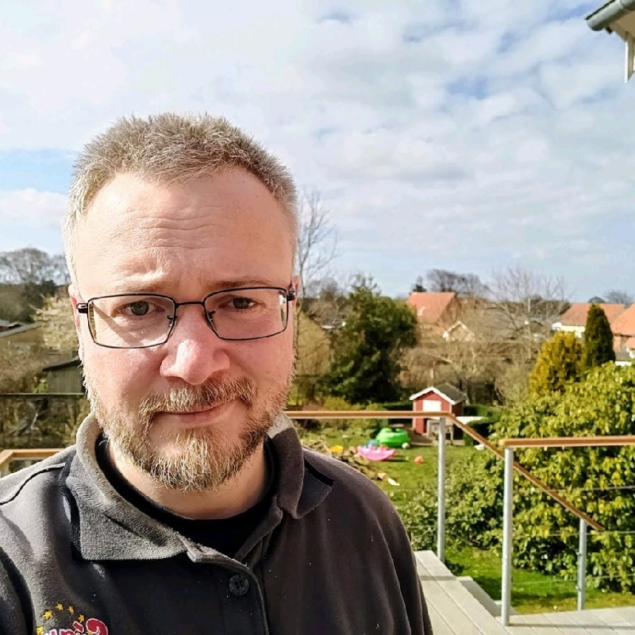

Andreas Fisker

Address:
Street: 742 Evergreen Terrace
Postal: 12345
Country: Denmark
About me:
I am a Senior Network Engineer | Cisco Certified Specialist, passionate workhorse. I have worked with Network/Infrastructure for 10+ years, and now I want to challenge development.
Work experience:
Senior Network Specialist at JN Data A/S 2013-2023
Education:
Data technician apprentice 2008-2013
Certifications:
- Cisco Certified Specialist - Enterprise Core
-
Cisco logo
Cisco Certified Specialist - Enterprise Advanced Infrastructure Implementation
-
Cisco logo
Cisco Certified Networking Professional -Enterprise
Complete Certifications list on linkedin